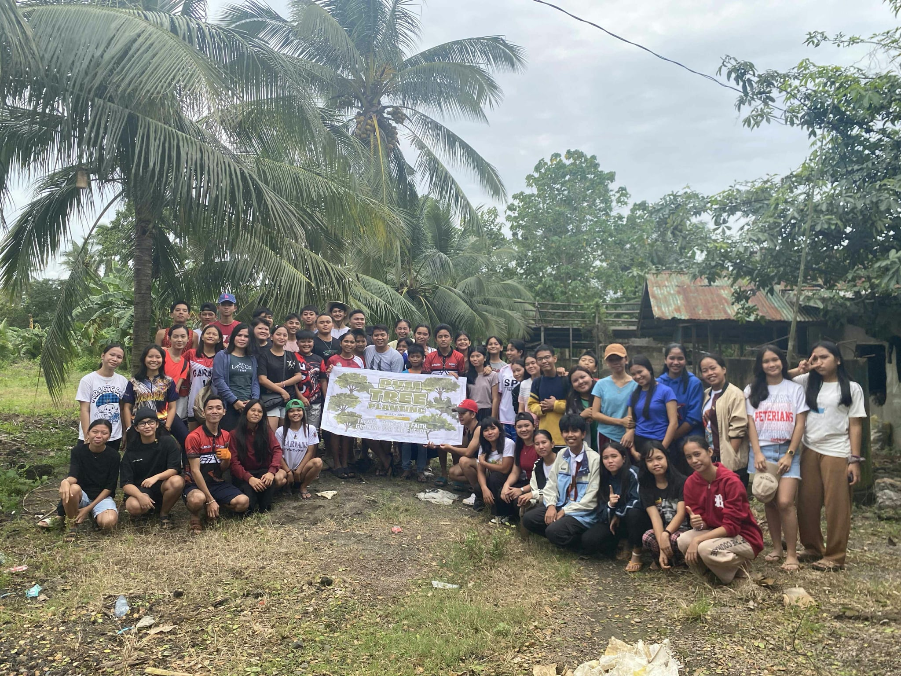
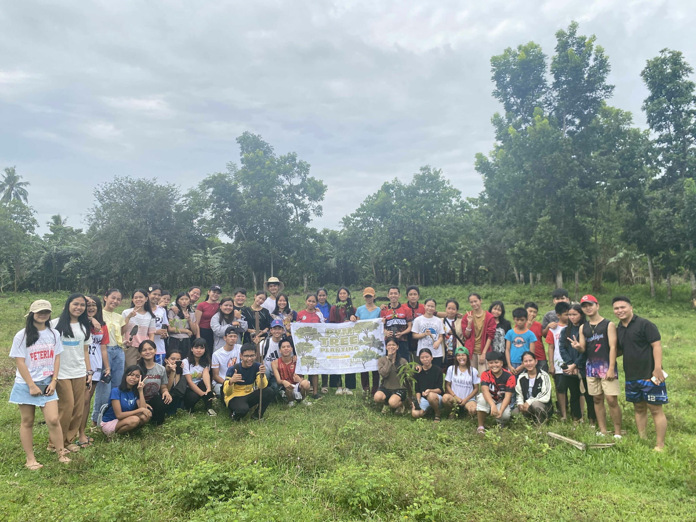
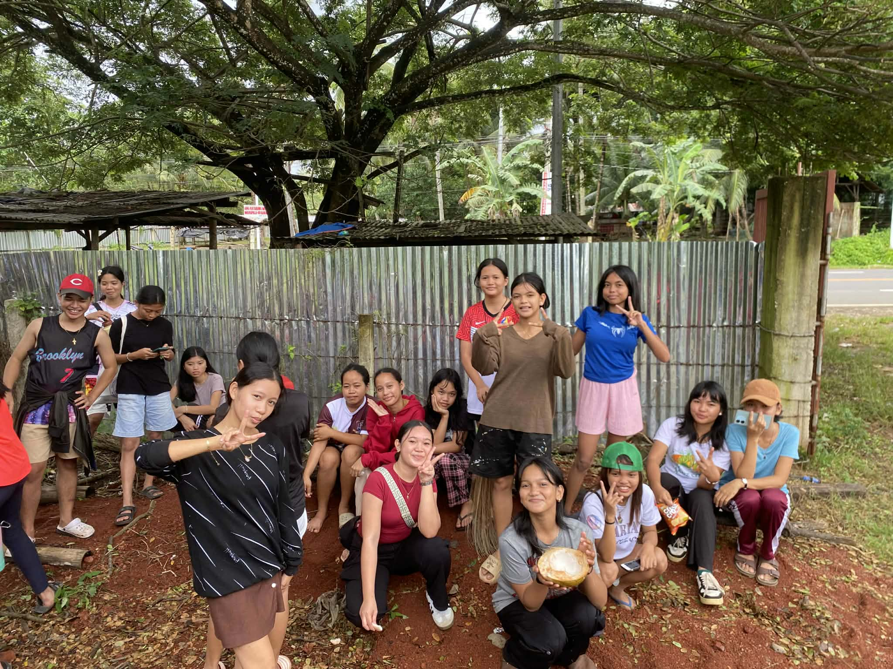

St. Michael Parish Youth Ministry, TREE PLANTING!
Join us in planting trees and creating a greener, healthier community.
Together, we can restore our environment, protect future generations,
and turn simple acts into powerful change.

Be part of meaningful service! Helping in the church allows us to uplift
families, support those in need, and strengthen our community.
Every volunteer becomes a spark of hope.

Community initiatives shape leaders, build compassion, and inspire unity.
By working together, we can create lasting impact and bring positive change
to every corner of our community. Get involved today!
